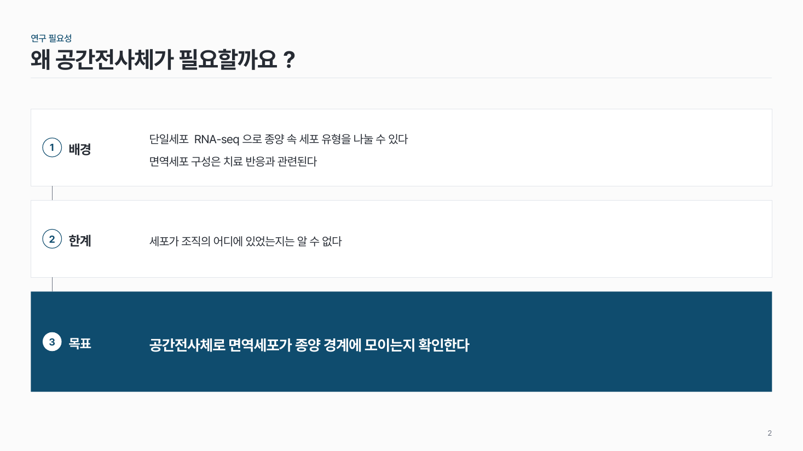

배경 → 한계 → 목표 logic-03
가로 띠 세 칸을 위에서 아래로. 배경과 한계는 흰 칸, 목표는 진한 칸.

이 시안
칸마다 한 줄
슬라이드 제목: 왜 메타게놈 분석이 필요할까요?
언제 쓰나
연구 필요성을 세 단계 논리로 보여 줄 때요. 서론 슬라이드나 과제 제안 첫 장에서 "알려진 것 → 부족한 것 → 이번에 할 것"을 한 장에 담아요.
구성
- 가로 띠 세 칸을 위에서 아래로, 높이 비율 1 : 1 : 1.3.
- 칸마다 왼쪽에 번호 원 + 소제목(배경 · 한계 · 목표).
- 배경 칸에는 알려진 사실, 한계 칸에는 빈 곳을 한두 줄.
- 목표 칸(맨 아래)은 진한 색에 연구 질문 한 문장.
- 칸 사이는 가는 세로선 하나로 이어요.
지킬 것
- 칸은 꼭 3개.
- 칸마다 두 줄 이내, 한 줄 25자 안팎. 소제목 4자 이내.
- 진한 색은 목표 칸 한 곳.
하지 말 것
- 한계를 3개 이상 늘어놓지 않아요.
- 배경 칸에 선행 연구 목록을 길게 붙이지 않아요.
- 목표 칸에 방법과 기대 효과까지 함께 쓰지 않아요.
팁
Progress report의 Background, Journal club의 "배경 · 질문"을 이 모양 한 장으로 정리할 수 있어요.
시안 비교
같은 내용을 옵션만 바꿔 그렸어요. 그림을 누르면 크게 보여요.
A칸마다 한 줄
슬라이드 제목: 왜 메타게놈 분석이 필요할까요?

B칸마다 한두 줄
슬라이드 제목: 왜 공간전사체가 필요할까요?